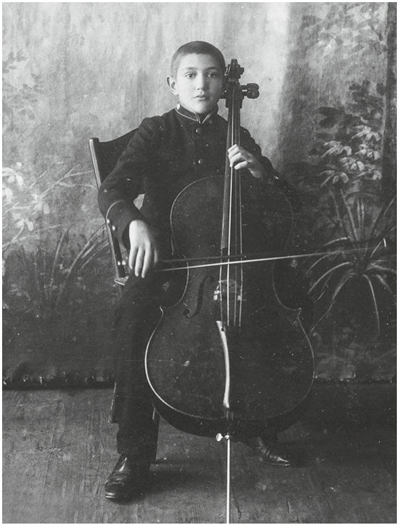
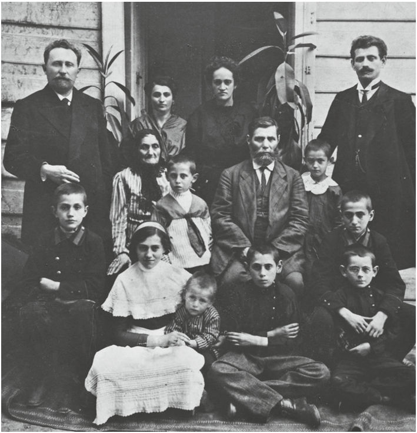
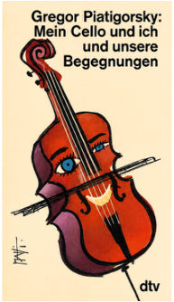
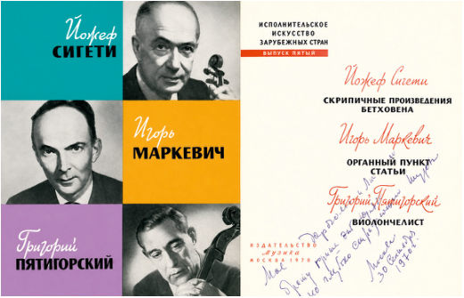
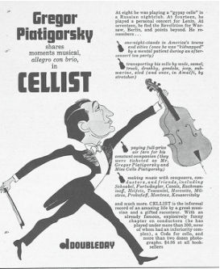

CELLO Книга · с. 52–54
Г. Пятигорский. «Виолончелист»
Автобиография великого виолончелиста. Глава первая
Глава первая
В Екатеринославе (позднее Днепропетровск, а ныне Днепр – Прим. ред.) климат был мягкий, но в степи всегда было неспокойно. Лёгкий ветерок раскачивал траву и рожь, которые росли высокими и дикими, придавая широким равнинам вид океана. Я никогда не видел океана, но мой отец говорил, что степь похожа на него. Это производило на меня огромное впечатление. Мне нравилось стоять на улице перед забором, слушать ветер и наблюдать, как он меняет облик степи. В мужских разговорах я всегда любил слушать разные истории о ней. Как зачарованный, я внимал рассказам о бродячих стаях диких собак, которые растерзали сына сапожника Ваню, о бродягах и дезертирах, о скрытых источниках и таинственных цветах, запах которых усыпляет людей и не даёт им проснуться снова…
На другой стороне города протекал Днепр. Поток, который преодолевал все препятствия, ударяясь о камни и вырываясь из берегов, меня не пугал. С отцом я ничего не боялся. Он был сильным, и мне нравилось проводить с ним время. Мы ныряли в грохочущие воды и боролись с порогами, мы смеялись над бурями и молниями и всегда возвращались домой, на край степи, улыбающиеся и счастливые.
В отличие от моей матери и моих сестёр, Нади и Полины, я не любил семейные прогулки в город по праздникам.
– Эти парки, бульвары и памятники стоят здесь для того, чтобы напоминать нам о романтической истории любви основателей нашего города, императрице Екатерине и Потёмкине, - говорил отец, заставляя и нас смотреть на вещи по-новому. Мы чувствовали себя не очень свободно здесь. Даже мама вела себя так, словно весь мир наблюдал за шествием её семьи, но выглядела прелестно, когда шла, держа отца за руку. Она всегда была хорошенькой и спокойной, и ей нравились эти прогулки. Возможно, отцу они тоже нравились, но я знал, что он больше любит наши прогулки на речку.
Наша семья была небогатой, но голодными мы никогда не были. Один из немногих домов, которые я знал кроме нашего, принадлежал моему дедушке по материнской линии. Как и в нашем доме, здесь не было водопровода, а туалет находился во дворе. Его фамилия была Амчиславский и он был плотником. Мне нравилось наблюдать за его работой и вдыхать запах дерева в его мастерской. Но другой наш родственник, парикмахер, к которому нас всех приводили стричься, совсем мне не нравился. Приходилось часами ждать, пока он закончит обслуживать своих клиентов. Часто он выражал свое негодование, щипая меня ножницами. От него пахло луком, и он всегда требовал благодарности. Я был возмущён и тем и другим, и, несмотря на то, что все остальные продолжали его регулярно посещать, я отказался пользоваться его услугами и просил маму стричь меня.
Мои бабушка и дедушка по отцовской линии жили в богатой части города, далеко от того района, где я родился. Их дом был большим и мрачным. Несмотря на громоздкую мебель и уродливые картины в огромных рамах на стенах, он казался нежилым, как склад. Здесь были старые комоды, сундуки и серванты для посуды, а также множество старинных предметов, о которых говорили с благоговением.


Но самой старой вещью в доме была бабушка, которой было почти 100 лет. Дедушка был ее третьим или четвёртым мужем. Коренастый, с квадратной бородой, строгий и скупой, он редко навещал нас. У него был книжный магазин, где работал мой отец. Они холодно относились друг к другу, и их ссоры очень расстраивали мою мать.
Я нечасто видел бабушку, но позже, думая о ней, я понял, сколько дурных снов я видел из-за неё и как, должно быть, боялся её. Она передвигалась, как призрак, и мне казалось, что я слышу, как стучат её кости. Мы называли её Пиковой Дамой. Известие о её смерти так и не дошло до меня, и я до сих пор иногда вижу её во сне. Для меня сейчас ей 150 лет, и она всё ещё жива.
В нашем доме кипела жизнь. Отец часами занимался на скрипке, всегда был весел и полон самых захватывающих планов.
– Всё будет ново и дерзко, – любил хвастаться он.
Он рассказывал мне о Мессии и Будде, о византийской архитектуре, о брачных обычаях лосося и, чувствуя мою гордость за то, что меня выбрали слушать, не обращал внимания на то, что я не мог понять и половину из того, что он говорил.
Однажды вечером, в середине рассказа из Библии, он сказал, что в нашей семье будет пополнение – под номером пять.
– Новая сестра или брат поставят тебя в центр внимания, – сказал он, словно предлагая мне новую важную должность.
В тот вечер он повёл меня на симфонический концерт, где я впервые увидел и услышал игру на виолончели. Я никогда раньше не слышал и не видел ничего более прекрасного.
С того вечера, вооружившись двумя дощечками, длинной для виолончели и короткой для смычка, я делал вид, что играю на виолончели. Даже рождение моего нового брата, Александра, не помешало моим занятиям. Эти волшебные деревяшки перенесли меня в мир звуков, где я мог вызывать любое настроение по своему желанию.



Внезапно что-то в доме изменилось. Участились визиты соседей, на их лицах отразился страх, они перешёптывались, а мать плакала. Даже случайный смех Нади не изменил атмосферу тревоги.
– Они ловят только тех, кто не умеет бегать, – смеясь, сказала она Леониду.
– Это не игра в прятки, – серьезно ответил он, – не все в безопасности, кто умеет бегать. Разве ты не помнишь курицу, которая бегала по двору после того, как мясник отрубил ей голову?
– Фу, не говори об этом. Кроме того, никто никому не отрубает головы. Отец сам сказал, что погромы проходят под личным контролем царя. А скоро ли будет погром?
– Я не знаю. Наверное, скоро. Ты боишься?
Я был ещё очень мал, но всё же помню наш подвал и лица, прижавшиеся друг к другу в темноте. Именно там, в подвале, я научился чувствовать страх других. Тишина была тяжёлой и долгой. Кто-то прижал меня к стене. Стена была холодной и влажной. Я ушиб голову.
– Они идут!
Я услышал топот у себя над головой. Потолок задрожал, и посыпались куски штукатурки.
Голоса были уже совсем близко.
– Эй, вы, маленькие жиды! Убирайтесь вон!
Послышались звуки бьющегося стекла и угрожающий смех. Нечеловеческие, страшные голоса яростно ударили мне в уши.
– Где Рози, моя Рози? Выпустите меня! Выпустите меня отсюда! - закричала женщина. Кто-то, должно быть, зажал ей рот рукой, её голос звучал сдавленно. Я попытался оторваться от стены.
– Тебе больно? - прошептал мужчина. – Я думаю, они уходят, – сказал он.
– Ни одной чёртовой крысы не осталось в живых! – прогремел голос сверху. Шум ругающейся толпы стал тише, и вскоре снова воцарилась тишина. Никто не пошевелился. Словно чудом, я теперь мог видеть подвал и людей. В конце комнаты я увидела отца. Леонид стоял рядом с дедушкой, плотником, который со своей серебристой бородой был похож на пророка с картинки, которую я видел в книге. Глаза Нади сияли, как у кошки. Они не моргали, и это напугало меня. В толпе началось волнение. Отец взобрался по лестнице к люку.
– Я посмотрю, безопасно ли выбраться. Всё в порядке. Не спешите, давайте по очереди, – приказал отец.
Его голос звучал неестественно громко. Когда мы выбрались, то увидели, что наш дом был разгромлен. Только пианино находилось на своем месте нетронутым. Я выбежал во двор. Люди стояли широким кругом и молчали. Дядя Григорий вытер слёзы с лица.
– Уходи! Ты не должен этого видеть, – сказал он.
Кровь была повсюду. Я наклонился, чтобы потрогать ее. Она был еще тёплой. Некоторые люди были испачканы ею. В ту ночь мы все спали на полу, прижавшись друг к другу.
Я вспоминаю весну, когда солнце растопило ледяную корку, блестевшую на снегу; а позже – смерть дяди Григория и сообщение Военного министерства о том, что он храбро погиб за Россию, за свою землю.
Продолжение следует